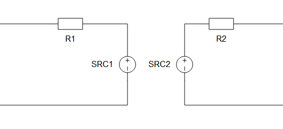
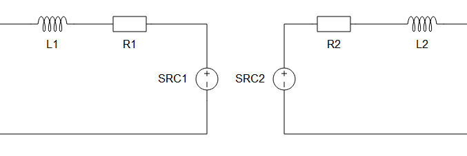
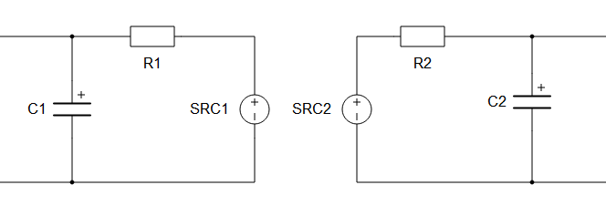
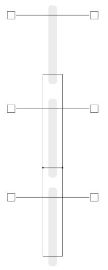
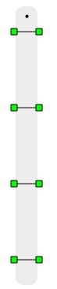
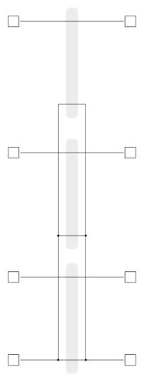

Device couplings - TLM
This section describes Transmission line model device coupling, including the Single Phase Device Coupling, Three Phase Device Coupling, and Four Phase Device Coupling components.
TLM device coupling components are used to partition the complete power electronics circuit into separate circuits that are emulated on different HIL devices.
 These components are partially ignored in TyphoonSim. Offline
simulators, like TyphoonSim, use variable simulation step in their simulations, so the
real-time constraints are not a concern. As a result, model partitioning is not required for
offline simulations because there is no need to split the model to improve computational
performance within a fixed time frame. For those reasons, the partitioning behaviour of TLM
core couplings will be ignored. However, these components will not be bypassed, so their
presence will impact the electrical circuit and their inductive/capacitive characteristic
will still be acknowledged. As a result, TLM couplings will practicaly be replaced with
corresponding inductance/capacitance with values specified in L and C properties, depending
on the Coupling
type.
These components are partially ignored in TyphoonSim. Offline
simulators, like TyphoonSim, use variable simulation step in their simulations, so the
real-time constraints are not a concern. As a result, model partitioning is not required for
offline simulations because there is no need to split the model to improve computational
performance within a fixed time frame. For those reasons, the partitioning behaviour of TLM
core couplings will be ignored. However, these components will not be bypassed, so their
presence will impact the electrical circuit and their inductive/capacitive characteristic
will still be acknowledged. As a result, TLM couplings will practicaly be replaced with
corresponding inductance/capacitance with values specified in L and C properties, depending
on the Coupling
type.
These components are only used in multi-HIL configurations where HIL devices are paralleled. Device coupling components define the communication variables between HIL devices, that are exchanged through High Speed Serial Link (HSSL). This block introduces a variable time delay between measured variables and corresponding controlled sources, which is negligible for most practical systems. The inherent paralleling link delay between two directly connected devices is ~0.5 µs, while total delay depends on several factors, including the amount of data that has to be transmitted through HSSL, the simulation timestep, the number of devices in paralleling chain, i.e., if devices exchanging the variable values are connected directly or through other devices in the chain, etc. The total delay between two directly connected devices can be estimated as:
Where Ts is the timestep period, the value of n is 0.5 µs when Ts is ≤ 0.5 µs or 0 otherwise, and m is a value in range [2,4].
TLM technique models discrete reactive components as transmission-line sections known as stubs, each of which has its own inductance and capacitance. TLM stubs are one port devices; The inductor can be represented as short circuit stub, while the capacitor can be represented as open circuit stub. Every reactive component in the circuit can be replaced by TLM stub. Meanwhile, TLM links are two port-devices. TLM link also has its own capacitance and inductance. If capacitance is dominant, the link can be considered as capacitive. In that case, the characteristic impedance of the capacitive link can be written as Zlk=L/T. If inductance is dominant, the link can be considered as inductive and corresponding characteristic impedance can be written as Zlk=T/C. In the previous equations, T represents simulation step duration.
TLM coupling component implementation is based on TLM links. The main advantage of TLM couplings, compared to the ideal transformer based coupling components, is that TLM couplings are symmetrical components. Both sides of the TLM couplings are voltage sources behind an impedance. Because of this property, TLM coupling rotation is not important and they will not introduce any topological conflict in the circuit. Figure 1 shows the structure of a TLM coupling component.
There are five parameters available: Coupling Type, values for L or C, Embedded inductors/capacitors, TLM / Embedded components ratio, and Ratio. Coupling type can be either inductive or capacitive. According to the selected type a parameter for inductor value or capacitor value is available. TLM coupling behaves as an additional inductor in the circuit or as an additional capacitor. If Embedded inductors/capacitors is enabled embedded inductors/capacitors will be added to both sides of the coupling, as it is shown in Figure 2 and Figure 3.
An existing inductor or capacitor can be replaced with a corresponding TLM coupling. In this case, the TLM coupling inductance/capacitance needs to be the same as the inductance/capacitance of the replaced element. If Embedded inductors/capacitors is enabled, the inductance/capacitance will be divided between the TLM and the embedded components. In that case, the best results are obtained. It is recommended to use TLM couplings in this way. Check Coupling component placement and parametrization - TLM based couplings for usage examples.
The main advantage of TLM couplings, compared to the ideal transformer based coupling components, is that TLM couplings are symmetrical components. Both sides of the TLM couplings are voltage sources behind an impedance. Because of this property, TLM coupling rotation is not important and they will not introduce any topological conflict in the circuit. The main disadvantage is that they will add some additional inductance or capacitance to the circuit. However, it is better to replace an existing inductor/capacitor with a TLM coupling in order to get better results. For more details about TLM coupling placement please refer to Coupling component placement and parametrization - TLM based couplings.
There are three TLM device coupling in the library: single-phase, three-phase and four-phase device couplings.
For more details about coupling placement please refer to Coupling component placement and parametrization - TLM based couplings.
Ports
- a_in (electrical)
- Input port A for Single Phase TLM Device Coupling,
- Phase A input port for Three Phase TLM Device Coupling and Four Phase TLM Device Coupling.
- b_in (electrical)
- Input port B for Single Phase TLM Device Coupling,
- Phase B input port for Three Phase TLM Device Coupling and Four Phase TLM Device Coupling.
- c_in (electrical)
- Available on Three Phase TLM Device Coupling and Four Phase TLM Device Coupling.
- Phase C input port.
- d_in (electrical)
- Available on Four Phase TLM Device Coupling.
- Phase D input port.
- a_out (electrical)
- Output port A for Single Phase TLM Device Coupling,
- Phase A output port for Three Phase TLM Device Coupling and Four Phase TLM Device Coupling.
- b_out (electrical)
- Output port B for Single Phase TLM Device Coupling,
- Phase B output port for Three Phase TLM Device Coupling and Four Phase TLM Device Coupling.
- c_out (electrical)
- Available on Three Phase TLM Device Coupling and Four Phase TLM Device Coupling.
- Phase C output port.
- d_out (electrical)
- Available on Four Phase TLM Device Coupling.
- Phase D output port.
Properties
- Coupling type
- TLM coupling behaves as an additional inductor/capacitor in the circuit.
- Specifies type of the TLM coupling- inductive or capacitive.
- L
- Available if Coupling type is set to Inductive.
- TLM inductance [H].
- C
- Available if Coupling type is set to Capacitive.
- TLM capacitance [F].
- Embedded inductors/capacitors
-
In real-time/VHIL simulation, if enabled, embedded inductors/capacitors will be added to both sides of the coupling, as shown in Figure 2 and Figure 3.
-
In TyphoonSim, this property will not impact the component configuration, since the TLM coupling will be replaced with inductor/capacitor specified by Coupling type and L or C properties.
-
- TLM/Embedded components ratio
- Available if Embedded inductors/capacitors is enabled.
- Specifies how the impedance will be divided between TLM coupling and embedded components - Automatic or Manual.
- If the 'Automatic' option is selected, the ratio will be determined by the discretization method. If the 'Manual' option is selected, the ratio can be explicitly set to meet the model's requirements. It must be in range (0,1).
- Ratio
- Available if TLM/Embedded components ratio is set to Manual.
- Specifies TLM coupling to embedded components ratio. It must be in range (0, 1).
- Embedded inductors initial current
- Available if Coupling type is set to Inductive and Embedded inductors/capacitors is enabled.
- Initial current of embedded inductors [A].
- Embedded capacitors initial voltage
- Available if Coupling type is set to Capacitive and Embedded inductors/capacitors is enabled.
- Initial voltage of embedded capacitors [V].



Single Phase TLM Device Coupling
A Single Phase TLM (Transmission Line Model) Device Coupling component is based on a lossless transmission line model.
Three Phase TLM Device Coupling component
A Three Phase TLM (Transmission Line Model) Device Coupling component is based on a Single Phase TLM Device Coupling component.

Four Phase TLM Device Coupling component

A Four Phase TLM (Transmission Line Model) Device Coupling component is based on a Single Phase TLM Device Coupling component.
